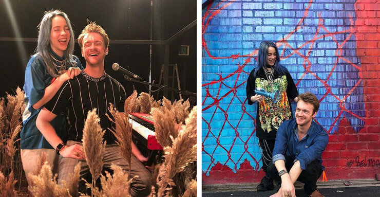

Para onde vamos quando adormecemos? Billie Eilish mostra o caminho
Por Lucas Racki
Postado em 06 de Novembro, 2019 às 12:00

A ascensão meteórica de Billie Eilish para o estrelato mundial tem sido nada menos que fenomenal e, sem dúvida, incomparável.
Desde a estreia de Ocean Eyes (2016) Billie Eilish infiltrou-se silenciosamente, mas sem desculpas, na vanguarda da música pop, graças a uma crescente legião de fãs em todo o mundo, a um EP que se mantém no Top 200 da Billboard há mais de 18 meses e que soma mais de 5 mil milhões de streams em todo o mundo, e às suas digressões esgotadas em todo o mundo.
Após algum tempo de espera, a ainda adolescente de apenas 17 anos lançou o seu tão aguardado álbum de estreia WHEN WE ALL FALL ASLEEP, WHERE DO WE GO? no dia 29 de março de 2019.
"Infiltrou-se silenciosamente, mas sem desculpas, na vanguarda da música pop"
WHEN WE ALL FALL ASLEEP, WHERE DO WE GO? foi escrito, produzido e gravado inteiramente por Billie Eilish, de 17 anos, e pelo seu irmão Finneas, na sua casa de infância em Highland Park, Los Angeles.
 Capa do álbum "WHEN WE ALL FALL ASLEEP, WHERE DO WE GO?"
Capa do álbum "WHEN WE ALL FALL ASLEEP, WHERE DO WE GO?"
A primeira canção a ser revelada desde o anúncio do álbum é bury a friend, que soa muito diferente de tudo o que existe atualmente. Um tema que reafirma o lugar de Billie Eilish, sempre na vanguarda, nunca comprometendo a sua sonoridade ou a sua visão.
Gravado no quarto de Finneas, em frente ao de Billie, os irmãos passaram a maior parte de 2018 escrevendo canções na estrada, passando depois muitos dias e noites fora de estrada, em casa, gravando o álbum.
A notícia chegou também com o lançamento de um novo single e respetivo vídeo oficial de bury a friend. O single, composto e produzido por Billie Eilish com o colaborador e irmão mais velho Finneas O’Connell, já está disponível em todas as plataformas digitais.
O percurso ascendente de Billie Eilish
Billie Eilish Pirate Baird O’Connell nasceu a 18 de dezembro de 2001. Sim, a maturidade que revela é impressionante! Mas acaba por ser natural, pois a sua música é bastante original. Criada em Los Angeles por uma família de atores e músicos, a jovem cantora começou num coro aos 8 anos. A primeira canção da sua autoria chegou com apenas 12 anos: Fingers Crossed inspirada pela série Walking Dead.
Uma das suas maiores influências provém dos irmãos mais velhos, sobretudo Finneas O’Connell, jovem ator famoso devido à participação na série musical Glee (que também é vocalista e compositor da banda The Slightlys).
Em 2018, Billie Eilish lançou a canção original do álbum “Inspired By” para o aclamado filme da Netflix “Roma”, premiado com dois Globos de Ouro e o Óscar 2019 para melhor filme.
Inspirada pelo filme e com curadoria do realizador Alfonso Cuarón, a canção “When I Was Older (Music Inspired by Roma)” foi escrita por Eilish e o irmão mais velho Finneas O’Connell.

“Enquanto compúnhamos a canção, queríamos escrever a partir da narrativa do filme e das cenas que mais nos marcaram”, contam os dois irmãos. “Ter tido acesso aos sons usados no filme tornou-se um fator inestimável que nos ajudou a concretizar isto. Versos como ‘memories burn like a forest fire’ são acompanhados de sons de árvores a arder na floresta fora da casa. O refrão tem sons do oceano. Pudemos ainda usar sons como os gritos dos estudantes em protesto ou o ladrar do Borras e transformá-los em elementos percussivos que ajudam a conduzir a canção. Nada nesta canção existiria sem o filme, que é exatamente o que adoramos.”
Para o título do tema, Eilish e o irmão Finneas inspiraram-se numa das falas de Pepe (personagem interpretada por Marco Graf): “When I was older I used to be a sailor, but I drowned in a storm”.
No Reino Unido, Billie foi a primeira artista internacional a ser distinguida com o Brit Award de Artista Revelação pelo seu EP de estreia. É ainda a artista mais jovem a entrar na lista BBC Radio 1 Sound Polls.
Confira o álbum no Spotify
Fonte: Mundo de Músicas
Deixe um Comentário: